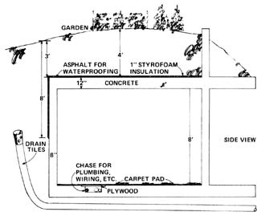
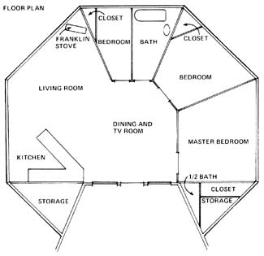
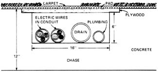
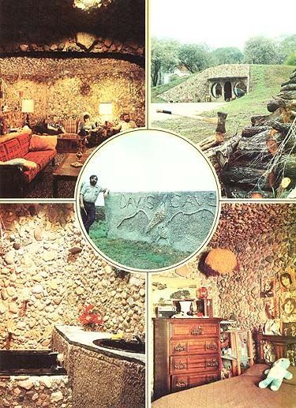
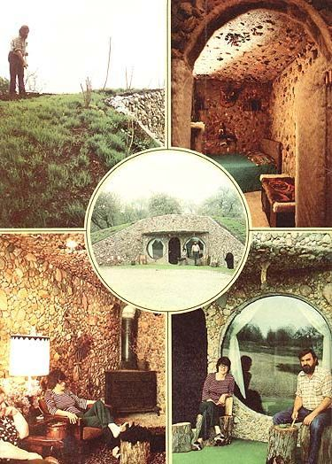

Andy Davis: Earth-Sheltered House Builder
An Plowboy Interview with Andy Davis, of Davis Caves, on building earth-sheltered houses.
By the Mother Earth News editors
July/August 1977
Well, the boys in Washington have finally figured out that the world will soon face a shortage of easy-to-plunder petroleum. Unfortunately, politicians being politicians the way they are, it's already beginning to look as if we'd have been better off with no petroleum at all . . . instead of the confusing welter of bureaucratic red tape, laws, directives, taxes, reports, hearings, rebates, agencies, and other abominations of government with which said politicians now propose to "solve" the "problem".
Gentlemen, gentlemen. We know you mean well . . . but, frankly, this particular situation is just too important to put into the hands of politicians. So why don't you fellows just go speak to the Chamber of Commerce or play with your military appropriations or do something else innocuous while the Real Men roll up their sleeves and fix what ails us?
Real Men. Men like Andy Davis of Armington, Illinois . . . who-together with his wife, an 18-year-old son, and three daughters (14, 12, and 11)-recently designed and built a beautiful, 1,200-square-foot, three-bedroom house for $15,000 that costs only $1.29 a year to heat! And, guys, Andy did it all without your red tape, laws, directives, taxes, reports, hearings, rebates, agencies, and other abominations of government . . . as Travis Brock recently learned during a visit to the Davis home.
PLOWBOY: Andy, this is really a great house . . . far nicer than I thought it'd be.
DAVIS: That seems to be the general reaction. People come in here expecting . . . well, I don't know what they expect to see . . . one of the old frontier dugouts, maybe. And our visitors always wind up using the same words over and over again: great, beautiful, remarkable, unbelievable, fantastic. I guess that "unbelievable" and "fantastic" are the two words used the most. A lot of people have just never thought about covering the walls and ceilings of their homes with something simple like rocks, and they're genuinely amazed at how beautiful it can be.
PLOWBOY: What gave you the idea of building a place like this?
DAVIS: I got the idea about four years ago when I was down in Arkansas. I was visiting an abandoned mining town on a hot day-it had to be close to 100 degrees outside-and I noticed that the further back I went into an old mining tunnel . . . why, the cooler it got.
Well, the walls of this old shaft were covered with crystal-big chunks of rock that looked like glass-and I had a flashlight with me. So I just sat there on a ledge, shining my light around on that rock. It was really beautiful. And I thought to myself, "Boy, this is nice back here . . . and I'll bet this tunnel will be warm in the winter too." And that's what gave me the idea.
PLOWBOY: So you came back here and built your own cave.
DAVIS: No, not just like that. But I did think about it. I didn't start to build a cave house right away, but I kinda kept the thought in the back of my mind for a while. And then, two years ago-during a winter that was downright mild compared to last winter-Margaret and I got a heating bill for one month for $167.
Well, that did it. I was pretty confident I could build an underground house that'd be a lot less expensive to heat than that. So I began turning the idea over in my mind. I musta spent close to three weeks just sitting in this chair thinking through each detail-I didn't want to start any actual construction until I was sure I knew what I was doing-before I convinced myself I was on the right track. And then I just went out and did it.
PLOWBOY: Several architects-Malcolm Wells, of Cherry Hill, New Jersey, is one-have been working on and promoting the idea of underground structures for the past several years. There was even a conference on "Alternatives in Energy Conservation: The Use of Earth Covered Buildings" held in Fort Worth, Texas back in the summer of 1975 . . . and I believe some of the folks who attended that conference now publish a newsletter on the subject. Had you heard about any of this activity when you started your house?
DAVIS: No. I didn't even know those people existed. I just saw that old mining tunnel in Arkansas and then, a couple of years later, the bill for $167 for heating a conventional home for a month arrived and I simply figured I'd build me an underground house. That's all there was to it.
PLOWBOY: And then you just sat there in that chair you're sitting in now until you'd worked out all the details in your mind . . . and then you built this house.
DAVIS: That's right. As far as I knew, there wasn't anybody else who'd done this before and there wasn't any other place like this that I could look at for reference, so I just went ahead and solved all the problems myself.
PLOWBOY: What kind of problems?
DAVIS: Weight, for one thing. There's at least three feet of dirt sitting all over the top of this building . . . and it mounds up to four feet deep in the center. At 100 pounds per cubic foot-about 350 pounds for every square foot of the ceiling over our heads-that adds up fast and I had to allow for it. Plus another 150 pounds per square foot for the weight of the concrete and stone in the roof itself, plus another 100 or so pounds per square foot for "live weight"-say, for when we want to drive the garden tractor or something like that around up there-plus a good margin for error. See. When you're talkin' about 1,200 square feet of living space-which this house has-you're, real quick, talkin' about a roof that must support 1,200,000 or more pounds. I had to allow for that.
PLOWBOY: What about dampness and moisture?
DAVIS: Yeah, everybody asks me that question. So many real caves and so many concrete basements are damp inside that most of us have naturally come to expect that any underground structure is going to have a moisture problem. I worried about dampness too in the beginning . . . especially when we hit a small spring as we were digging out the excavation for this place.
Well, when you hit water and you don't want it, you have to get rid of it. So we tiled that little spring up-it wasn't big enough to use for our water supply-and we led it off to a drainage line. And once we poured our concrete floor over it, we never knew it was there anymore.
PLOWBOY: But what about ordinary seepage through your walls . . . or surface water coming in through the ceiling?
DAVIS: We tiled the footings, of course, just the way you'd tile the footings for a basement. And we coated the top of the roof and the outside of all the walls that are underground with asphalt. We also laid one inch of styrofoam insulation across the roof and part way down the sides of all the covered walls. This helps regulate the temperature in the building . . . but it also leaves a space around the house that surface water can seep down through-to the drainage tiles under the footings-thereby keeping it from coming into the building through the roof or walls.
So that takes care of the surface water . . . that takes care of any water that might want to get into the house from the outside. But, as I'm sure you know, most conventional basements don't get damp because of outside water seeping in anyway. They're damp because the warm, moist air from the rest of the house sinks into them and then condenses. And all you have to do to solve that problem is do away with the warm, moist air in the first place.
And that's what we've done. We've taken steps to see that we never get enough of a buildup of heat and humidity in here so that we feel damp or so that moisture begins to condense out of the air on anything.
PLOWBOY: What kind of steps?
DAVIS: A good example is my wife's clothes dryer. Its exhaust is both hot and damp. Obviously we don't want it blowing into the house during the summer when the atmosphere here in Illinois is already warm and frequently laden with moisture. It'd just condense all over everything and make the whole building humid and sticky. So we vent the dryer outside in the summer.
But wait a minute! When you heat a house during the winter, the air inside usually gets too dry anyway . . . so dry that, to feel comfortable, you sometimes have to raise the building's inside temperature away up into the high 70's or low 80's. What you want then is to put both heat and humidity into your home. So, in the winter, we vent the dryer right into the house. Instead of letting that moisture and warmth just blow outside and go to waste, we use it to regulate the atmosphere here in the house.
That's the idea, you see. If you use just a little common sense, you can take a lot of the things that most of us forget about-things like the exhaust from a clothes dryer-and, merely by the way you handle them, they can help you live a lot more comfortably the year around. That's what we've done anyway and, as a result, we've never had a humidity problem in this house . . . even though it is underground.
As a matter of fact, it's always just about perfect in here. The humidity usually hovers around 50%. Once in a while-when it's really damp outside and Margaret is doing a lot of cooking-it may go up to 80%, but I've never seen it over that. Generally, though, it stays around 50% . . . and it's never been below 40% in the winter. So we just don't have to overheat our air to stay comfortable during cold weather.
PLOWBOY: OK. Let's get a few more of the details of your cave's construction. What is this in here . . . about an eight-and-a-half-foot ceiling?
DAVIS: A little over eight feet, on the average. It'll vary some, depending on just how far a few of the rocks stick out of the concrete.
PLOWBOY: Where did that stone come from anyway, Andy? Did you pick it up yourself?
DAVIS: Right. For the most part my family and I picked it up over at a nearby gravel pit. This is what's called "glacier stone" and the pit where we got it doesn't have a rock crusher, see. The guys that work there run the stone through a screen before they sell it and everything that's too big to go through rolls over to the side and just stacks up in the way. So we more or less got all the rocks we used in the house "free for the hauling".
Then-as the word began to get around about what we were doing-why, people started bringing us special little gifts of rocks from other places. Folks would come in, you know, and hand us a rock and say, "Here's one from the ocean," or "I brought you something from Indiana," or "Maybe you'd like a rock from a real cave for the cave you're building." We got rocks from all over that way.
PLOWBOY: How did you embed all the stones in your walls and ceilings . . . or, better yet, just go back to the beginning and-step by step-tell us how you built this whole place.
DAVIS: Well, I'm an electrician-not a millionaire-and Margaret and I have a big family with four children still living at home. So, once we'd decided we wanted to construct the house, we had to begin by buying two lots here on the edge of Armington and concrete and wiring and plumbing and other materials so we could do it. And we didn't have that kind of money lying around, so our first step was a visit to the bank for financing.
PLOWBOY: Good point! A lot of bankers have financed conventional housing . . . but not too many have put up money for a cave dwelling. Did you have any trouble getting the backing you needed?
DAVIS: No. That could have been a problem . . . but our banker was either smarter than the average banker or more willing to take a risk on a new idea. We didn't have any trouble there.
Nor did we have any problem with building inspectors. A lot of the things we've done here are kinds, unusual-at least when compared to a conventional home-but everything in this house meets or exceeds all the building codes. Besides that, I've built some other things in the past and I guess the local inspectors just assumed that I could do what I said I was going to do. Some of the folks around here might have laughed a little when we started out to build our own cave . . . but we never had any trouble financing the idea and we never ran into any problems with building inspectors.
PLOWBOY: I guess you must have begun your actual construction by digging out an excavation.
DAVIS: Well we didn't dig down, the way some people think. See, what we did was we bought these two lots because they had a hill on them. And then we just brought in a bulldozer and dug straight back into the hill. As it turned out, that was a good idea in some respects and not so good in others.
It was good because the work was easy. We didn't run into any solid stone that would have been tough to pry out or blast loose. But it was a little bad because the original hill was only about ten feet high. And, even after we'd finished our house and put all the dirt from the excavation back on top of it, there just wasn't enough earth to spread around and blend into a new slope the way we wanted. We had to haul in 50 truckloads of dirt to landscape the place right. This wasn't any big thing, of course, but it did cost us some money that we might have saved if we'd planned our excavation work a little better.
Now you'll notice that the floor plan of our cave isn't square or rectangular. It's an octagon. We did that on purpose. The house is stronger this way. In effect-by using this shape-the building doesn't have long, weak walls tied together by four strong cornerstones the way most buildings do. Instead, each short wall braces and is braced by the ones it joins . . . and the structure becomes almost as strong as if the whole thing were one big, rigid cornerstone!
PLOWBOY: Are the walls poured concrete?
DAVIS: Right. We thought about bricks, but they'd have been too expensive. Cement blocks would have been too weak, and wood would have rotted. So we just built up some forms and then poured the walls out of concrete. The back and side walls are eight inches thick and the one across the front-the only exterior wall that's not covered with dirt-is 12 inches thick. The interior partitions measure from six to 12 inches through and the ceiling is a foot thick. We used 127 cubic yards of ready-mix in the walls, the ceiling, and the floor of the house.
PLOWBOY: You poured the outside walls first and . . .
DAVIS:. . . the ceiling next, the floor after that, and the interior partitions last of all.
PLOWBOY: Did you use any reinforcing rod in the concrete.
DAVIS: Oh sure, lots of it. We really tied that concrete together. We also embedded pipes in the ceiling and walls so that, later, we could run wires through them for lights and electrical outlets. The floors were done somewhat differently. We made little ditches-or "chases", as they're known in the construction business-in the floor. These are open spaces 18 inches wide and six inches deep set right down into the surface of the concrete and covered by pieces of plywood that are recessed just the wood's thickness to make the finished floor level and smooth. The chases hold most of the house's plumbing and a lot of its electrical wiring, switches, and plugs. If anything goes wrong, all we have to do is roll back the rug, lift a section or two of plywood, and go to work.
PLOWBOY: What about the rocks?
DAVIS: Well that's kind of a trade secret, but I can tell you that we put them in by hand. While the concrete in the walls and ceiling was still barely pliable in each pour, we pulled off the forms and then embedded the stones that you see all over the interior of our cave. We're sure they add some strength to the walls and ceiling but that wasn't the main reason we put them in.
The most important reason the rocks are there is because they really look nice and they give this house the atmosphere we were after. Lots of modern architecture is built with poured concrete, you know, but we didn't want to live in a "space age" house. We wanted to live in a cave . . . and the stones all over the walls and the ceiling really do make our home feel like a cave.
The second reason we covered the inside of our house with rocks is because they should stay just as good looking as they are now for dang rear forever. We should never have to redecorate this place for as long as we live . . . and that's going to save us a lot of time and money.
And the third reason we embedded all those stones in the concrete is because-sooner or later-a concrete wall always seems to crack at least a little bit someplace . . . and we figure that the rocks are going to cover almost any kind of a crack that ever appears.
PLOWBOY: Good enough. And I suppose you finished the outside of the building by waiting a while until the concrete had cured . . . and then putting on the coating of asphalt, adding the inch of Styrofoam across the top and down the sides, and covering the whole thing with three to four feet of earth.
DAVIS: Right. That's pretty much the way we did it. Then we smoothed off the dirt and planted grass seed and a few bushes . . . things which have roots that'll never reach all the way down to the roof of our cave where they might someday cause trouble. That's why we didn't plant any large trees on top of the house.
PLOWBOY: I suppose you get a lot of comments about those two big windows and your rather unusual front door from visitors the first time they walk up to your home.
DAVIS: We sure do. Each one of the windows is six feet across and, as you can see, round. They're also Thermopane, very strong, and quite expensive . . . about $400 each. The door is framed up with one by fours and paneled with particle board. And over the particle board we've stretched a covering of fur . . . which, of course, is what makes the door so unusual.
PLOWBOY: Why the round windows and the fur on the front door?
DAVIS: For the same reason we've got rocks on the walls and ceiling, fur on all the inside doors, and doorknobs and other hardware in the house made out of cow bones. As soon as we started talking about living in a cave house, the joke began going around town that the Flintstones were gonna move into Armington. So we just decided to go along with the gag and turn our new home into something that the Flintstone cartoon characters would really enjoy. As a matter of fact, the fur doors-and the arches over them-and the bone door handles and towel racks came right out of the Flintstones. That's where we got the idea.
PLOWBOY: And the lights?
DAVIS: Yeah, we carried the cave motif right on through to our electrical fixtures and wiring, too. There's a total of 48 light fixtures recessed into the ceiling of our home and we've stuck pieces of colored, broken glass around the edges of all of 'em. The reflections that come off the glass remind me of the way my flashlight reflected off those chunks of crystal in the walls of that old mining tunnel down in Arkansas.
And here's something else we did that we kinda like. See? There are no switches for the lights on any of the walls. And you don't see any outlets either. They're all out of sight under the rugs. You might have a little trouble finding them at first, but we know where they all are and just where to go whenever we want to plug anything in.
PLOWBOY: And when you want to turn a light on or off . . . ?
DAVIS: We just walk over and step on one of the floor switches. They're like a dimmer switch in an automobile. See. Step once, and the light comes on . . . step again, and it goes off.
PLOWBOY: That's pretty nifty . . . and there's no question about it: Hiding all the outlets, switches, and fixtures this way certainly does make your house seem more like a real cave. I like it . . . but aren't features like this awfully expensive? I mean, this looks like a $50,000 or $60,000 home.
DAVIS: Nope. The materials in the house itself cost us just $7,000. And the whole place-lots, house, carpeting, all new appliances, septic tank, everything-was only $15,000.
PLOWBOY: Wow. You really got your money's worth.
DAVIS: Well don't forget that we-my wife, the four children still at home, and me-did most of the labor. That $15,000 was just for materials, appliances, the lots, and the subcontracting we had done on excavations for the house and septic tank and drainage lines.
PLOWBOY: Yeah, but that's still a lot of house for the money in this day and age. How long did it take you to build it?
DAVIS: We figured that we'd finish the place in three and a half months. And I still think we could have done it. But, as you know, the news media found out what we were doing and the AP and the UPI ran stories about us in hundreds of newspapers and we were on national TV 11 times, I think it was, and I don't know how many radio broadcasts . . . and all that exposure brought in just hundreds and hundreds of people who wanted to see what our cave house was all about and learn how it operated and all that.
As it turned out, we spent a total of six and a half months constructing the place . . . and we estimate that three and a half months of that time was used up just talking to people. Thanks to all the publicity and interest, we didn't get moved in here until last December.
PLOWBOY: December 1976 . . . just before the terribly cold weather of early 1977 set in.
DAVIS: Right.
PLOWBOY: Well, how did your new home make it through that test?
DAVIS: Everything worked even better than I'd expected. I was pretty sure my ideas were going to pan out, of course, or I wouldn't have built this cave house to start with. But even I was surprised at how well everything has operated. The house was far warmer and more snug during that really bad weather than any aboveground house I know of in this part of the country . . . and we did it on even less fuel than I'd projected.
PLOWBOY: Can you be more specific about that?
DAVIS: Sure. Let's go all the way back to why the house works so well and start from there.
The real secret of this building's remarkable performance is not the four feet of dirt on its roof. Four feet of dirt, all by itself, doesn't have any more value as insulation than, say, 10 inches of most good insulating materials on the market. So all that earth up there on the roof is all right . . . but it's no big deal.
But the earth around and underneath our cave house . . . ahhh, now that's a different story. Dig down eight feet beneath the surface of the ground almost anywhere in this part of Illinois, and you'll find that the temperature of the soil remains at an almost constant 58°F year round. As a matter of fact, since the heat of the summer and the cold of winter can only penetrate those 96 inches of earth just so fast, you'll find something else that's even more interesting: The temperature of the ground eight feet down is actually slightly warmer than 58° in November and just a little cooler than 58° in May.
PLOWBOY: The whole earth, then, is acting like a gigantic flywheel to balance out-at some depth-the seasonal changes of temperature we experience on the planet's surface.
DAVIS: Right. The whole earth works like a big flywheel. It absorbs a certain amount of heat energy during the summer and then slowly releases that energy in the winter.
And that's why we insulated the top and partway-but not all the way-down the sides of this underground house. We only brought that Styrofoam insulation down eight feet below the ground's surface, and no further. Why? Because we wanted to shield our living area from the faster temperature swings near the earth's surface, while leaving it exposed to the much slower temperature variations that take place eight feet and more beneath the surface of the ground.
Now, what does this mean? It means that when the outside air temperature is 10 degrees below zero and a family living in a conventional house above the ground wants to keep their home at a comfortable 70° . . . why, they have to burn enough wood or oil or coal or buy enough electricity or gas to maintain that full 80° temperature difference. And that's a lot of fuel.
But under the same conditions-when the outside air temperature is 10 degrees below zero-the "outside dirt temperature" for our house is still 58°. Which means that we only have to maintain a 12° temperature difference to keep our cave home at a comfortable 70° . And it takes a whole lot less fuel for us to maintain that 12° difference than it takes for the other family to maintain its 80° temperature difference.
PLOWBOY: And besides that, I'll bet you come out even further ahead of the game on windy days. Sheltered under four feet of dirt the way you are, you should have hardly any of the wind chill factor to deal with that sometimes seems to actually pull the heat right out of an aboveground house.
DAVIS: Right. That probably translates into an even greater fuel savings for us.
PLOWBOY: OK. But let's get back to the moderating flywheel effect that all the earth around and beneath your cave house has upon the dwelling. Is there anything you can do to make that effect even more pronounced?
DAVIS: Oh sure, we've already done it. Ail those rocks in the walls and the ceiling are pretty and we like to look at them . . . but they're also there because rocks heat up and cool down slowly just the way the earth does. The sheer mass of the concrete and stone we've put into our residence has very little value as insulation . . . but a great deal of value as a moderator of the temperature in here.
Now, to a certain extent, this works both ways. When we first moved in last December, for instance, we had to run our Franklin stove and an auxiliary electric space heater full blast-both of them-for a whole week until all those rocks and all that concrete in the walls, and a certain amount of the earth around them, slowly came up to 72°.
Once we finally got everything up to that temperature, though, it all wanted to stay right there. From that point on it didn't take much heat at all to keep everything at a steady 72° in here. We disconnected the space heater and we cut way back on the amount of wood we burned in the Franklin and everything coasted along as pretty as you please at a constant 72°.
PLOWBOY: You kept this whole house warm all winter with just that one little Franklin stove?
DAVIS: Right. And we didn't even keep it burning all the time. We'd never, for example, get up at night and stoke the fire. Instead, we'd actually bank the blaze when we went to bed and, interestingly enough, with the fire banked and all the doors in here closed at night . . . the temperature would usually climb a little before we got up the next morning. It wasn't much-just a half degree or so-but once all these rocks are warmed up it's obvious that, as long as no one is going in and out the way we do during the day, the sheer mass of the heated stones and concrete can carry over and keep us warm for a long time.
This is more than just theory, too, by the way . . . as we had graphically demonstrated to us during one of the unexpected big snows that hit Illinois last winter. I had plenty of wood lined up for fuel at the time, but it was all somewhere else waiting for me to cut it. So there we were, snowed in by a blizzard for four full days with nothing to burn.
Well I went up to a nearby gas station and brought back six old tires. I thought we could at least burn them in the stove and get a little heat that way. But we had to cut the rubber into such small chunks that it wasn't worth the effort . . . so we just let the fire go out.
PLOWBOY: What happened?
DAVIS: We only lost two degrees a day. It was something like 25 below zero outside with a wind chill factor all the way down to minus 80° but, in four days without a fire, the temperature in here only slid down from 70° to 62°. To tell the truth, I could have gotten out and brought wood in a day or two earlier than I finally did . . . but we were all so comfortable that I didn't want to do it. We just didn't have anything to worry about.
At the same time this happened to us, though, they lost their electricity for 10 hours in Minier-a little town north of us-and the folks up there suffered tremendously. When the electricity went off for just 10 hours in Minier, it left people all over town really up against it. The temperature went right down to below freezing in many homes and practically every water pipe in Minier froze up and busted. Yet here we were without any heat at all for 96 hours . . . and our house never got below 62°.
PLOWBOY: What about the rest of the winter?
DAVIS: You know, they claim that this was one of the worst sieges of bad weather the U.S. has had since the government started keeping records of such things. But I never enjoyed a winter so much in my life. We just sat in here and "let 'er blow" outside. We didn't care what happened.
PLOWBOY: You said earlier that it was a $167 gas bill for one month during the winter before last that prodded you into building this house. So tell me: How many $167 one-month fuel bills did you have to pay this past winter.
DAVIS: None. We didn't even come close. We only burned two and a half cords of wood in the Franklin all season.
PLOWBOY: And how much did that cost you?
DAVIS: I get the wood "free for the cuttin' " when the city wants to get rid of old trees. I enjoy the exercise, so I don't really feel the wood costs me anything at all. If you wanna nitpick, though, I guess you could say we heated our house last winter for $1.29. That's how much I spent for gas and oil for my chain saw.
PLOWBOY: $1.29? That's all your fuel cost you for the whole winter?
DAVIS: Well, actually, I did better than that 'cause we never even burned all the wood I cut during the bad weather this year. We've got enough fuel left over and stacked up out there to run us through next winter and well into the one after that. So I tell people that, even though we spent $1.29 for wood this past year . . . well, we expect to cut our bill substantially the next time around.
PLOWBOY: Fantastic! Here we are living in an age when some middle-class members of our society are turning their thermostats back to 60° and still going broke spending two or three hundred dollars a month for fuel . . . and you're sitting here sailing through whole winters at 72° and spending-at most-a token dollar or two to heat your house for the whole winter!
DAVIS: Right. And we're not just saving in the winter either. This house is comfortable during the summer too . . . without any need for expensive air conditioning. I can hardly wait until the middle of August. When everyone else around here is rolling and tossing and trying to get some sleep on those hot, sticky nights . . . we'll be peacefully slumbering away-under blankets-in a house that's a cool 58°. I figure that we may even want to open up some vents during the summer and let in a little of that hot outside air . . . just to keep it from getting too cold in here!
PLOWBOY: Amazing. This house is going to pay for itself in just a few years on what you save on heating and cooling bills alone. But does it have any other advantages. Is there anything else about your underground cave that's different from an aboveground house, and which you like?
DAVIS: Oh, lots of things. It not only wants to help heat itself in the winter and cool itself during the summer, but it does it all so evenly. We never get any of that variation that so many houses have every time the furnace kicks on and off. Whatever temperature we want is always just constant in here. Everything works to keep the conditions in here on an even keel. We can change things when we want to, of course, but we know the change will take place gradually with none of the quick fluctuations that can have you broiling one minute and chilled the next. We think that makes this place a lot more healthful to live in.
And then we like the idea that our cave home is fireproof. What happens to the typical aboveground house when a fire breaks out? The people who live there lose everything. What would happen to us under the same circumstances? Well, in the first place, a fire is sorta unlikely in this cement-and-rock structure sunk four feet under the surface of the earth. But if we did have a fire, we'd lose . . . what? . . . some furniture and, maybe, a door or two. That isn't even worth carrying insurance on.
PLOWBOY: And if you aren't paying fire insurance premiums, that means this cave house of yours is saving you just that much more money every year, year after year, as regular as clockwork.
DAVIS: Right. The same goes for tornadoes and other kinds of storm damage. This part of the country turns into Tornado Alley every spring. And each time one of those twisters comes through, where does everyone head? Underground, to the storm cellar. Well, guess what? I'm already here . . . and I've got my whole house with me.
PLOWBOY: What about an earthquake?
DAVIS: Well I was talking to a professor from the University of Illinois one day-he's a geologist-and he was telling me this house is a good place to be during an earthquake too. He was saying that the reason buildings fall down when the ground trembles is because they're sitting up above the surface and trying to stand still while the earth moves beneath them, and it's this difference that tears 'em apart. But this house, which is right down in the ground, will just move back and forth a little with the quake and ride the whole thing out. According to the professor, the only way a quake can hurt us is if a fault opens up right under the house and we fall into it. But, of course, that's highly unlikely and nothing else would survive something like that either.
What it boils down to is that our cave home is so far ahead of every aboveground house around here when it comes to surviving any kind of calamity you can name that it isn't even funny. When we lived above the surface, we had an ideal location. Our house sat on a hill overlooking a five-acre lake with oak trees around it and it was just perfect . . . except for the fact that we were always worried about fire and tornadoes or just ordinary spring storms that could blow a limb through the roof or take the shingles off. Down here, though, we know we're safe from everything but the direct hit of an atomic bomb. This house is a lot more fun to live in.
And quiet! Boy, I'll tell you . . . this is the place to live if you want to get away from noisy neighbors. Once a herd of cattle-musta been 25 or 30 of 'em-got loose and stampeded right over this place . . . and Margaret-who was in the house at the time-came out later and she didn't even know anything had happened.
Another time we were all in here and my son-in-law-who'd just bought one of those really big and really loud snowmobiles-came roaring through the property and up over the roof and right on across our lots. And about 20 minutes later he came back and asked us how we liked his new snowmobile, and we said, " What snowmobile?" I've even driven crawler tractors over this place and the people inside never knew it.
PLOWBOY: Do you ever get claustrophobia?
DAVIS: In here? No. As solid as this place is, we never feel shut in. It's those big windows that do it, I guess. You can see them from almost any spot in the house.
Actually, you know, I have claustrophobia. It's awfully easy for me to feel real uncomfortable in a tight place. And that's the reason I'd have built two ways in and out of this house even if the building code hadn't called for two entrances. It's important, see, that I always know in my mind that I've got another way out of wherever I happen to be just in case something happens to the way I came in.
But as far as feeling nervous in this house because it's underground? No. We've never had that problem and I don't think anyone else has either. I know we get a lot of visitors who come here to see the place for that very reason: They want to know whether or not being underground will bother them. And the minute they come in and sit down, they're right at home.
PLOWBOY: Is there anything about your cave house you'd change if you had it to do over?
DAVIS: Well, some of the people who've been here tell us that we shoulda made the front of the house face east or south instead of west the way it does. They say the place would be even easier to heat in the winter than it is now. But I don't know . . . $1.29 is hard to beat for fuel the way it is. And this way, with the cave facing west, it's kinda nice the way the low setting sun comes so far into the house and allows Margaret to grow flowers all the way back here. She couldn't do that if the place faced south . . . the sun just wouldn't penetrate that deeply.
PLOWBOY: Why does the house face west?
DAVIS: We just took the hill we had to work with as we found it, and that hill faced west a long time before we decided to build a house in it. I don't think it matters a whole lot anyway when you're putting in a cave home. Any direction is a good one for a place like this to face, as long as it doesn't look due north. You want the coldest winds in the winter to blow up and over the house . . . not hit it square on.
PLOWBOY: What other changes have you considered?
DAVIS: One of these days we may dig on further back into the hill and put in a root cellar. And we still haven't decided on the kind of reflectors we want to put over our light fixtures. We need something up there in the ceiling to make the overhead lights look more like sunshine coming down through the roof of a cave . . . but we haven't figured out just what'll do that yet.
We've also played around with the idea of using skylights to put more natural light into the back bedrooms. We've even designed a periscope kind of thing that can pipe sunlight back into the corners, but I don't see any real advantage to it. Some people might think a setup like that is worthwhile but it's been my experience that, even in aboveground houses, most folks keep their bedrooms sorta dark anyway and just kinda turn the lights on automatically when they go into those rooms. Even without the skylights, I think we get about as much natural light in our bedrooms right now as the average aboveground house gets in a bedroom that has its curtains closed.
PLOWBOY: All in all, then, you're happy with your cave just the way it is?
DAVIS: Real happy. And you can't beat our maintenance setup. We don't have any! There's nothing to paint or rot out or discolor or fall apart anywhere in the house. We've never used a paintbrush on the place and we never will. The only thing I have to do to keep our cave looking good is mow its roof once a week in the summer!
PLOWBOY: OK. Where do you go from here?
DAVIS: Well we're putting a garden in up on top of the house and I may even decide to build a greenhouse up there. That way we can use what heat goes up the stovepipe from the Franklin stove and we'll have absolutely no heat loss at all. Instead, we'll have vegetables-maybe even an orange tree-the year around growing right on top of our home.
We've also talked about adding a greenhouse to the front of the building. That way we can walk through a garden of flowers and vegetables every time we come into the cave. This construction concept is so adaptable you can do almost anything with it.
Right now we're in the process of building an underground farrowing house for some pigs . . . and we're mulling over the idea of a cave grain cellar. The more we think about how successful our new home is working, the more we get ideas for putting other residential, agricultural, and commercial projects underground. There's just no end to the possibilities! It's all very exciting.
I think we're definitely onto something that will be the wave of the future. And one of the really nice things about building underground this way-besides all the things we've already mentioned-is the fact that the structures we put in should last almost indefinitely . . . thousands of years. Concrete just gets stronger the longer it lasts and I can't think of any reason one of our caves shouldn't last from now on . . . unless someone gets tired of it and rips it out.
PLOWBOY: It sounds as if you're going to make this your life's work.
DAVIS: Well it didn't start out that way. In the beginning I was just looking for a way to cut my family's living expenses. Most of the people who heard that I planned to build a cave and move in were a little skeptical, you know, of the whole idea. A few of the folks around here probably even thought I was nuts.
But then we started getting all that publicity and, for the first time, Armington was on the map. Well, that began to get people in this area enthused about my project. And then we got the house finished and we moved in and, by gosh, it not only worked . . . it worked better than even I'd expected.
Now we've got all kinds of people from all over the country and other parts of the world asking me how I did it and will I help them do the same thing and what do I think about this modification or that variation of my basic idea. We've gotten so many requests, in fact, that I'm putting together floor plans for several different cave homes right now. We're also working on a booklet of general information about what we've done and we're thinking about getting set up to offer engineering and consulting services to anyone who wants to build a house like this. We may even franchise contractors to do the work in other parts of the country. I just don't know yet.
I do know one thing though: Our new house works like a champ and I'll never live aboveground again. I think our ancestors made a big mistake when they left their caves and moved into the flimsy, expensive, energy gluttons that most of us still call home. I'm betting that it's only a matter of time until we all go underground again.
Davis Caves Earth Sheltered Homes
 |
 |
 |
|
 |
 |
 |